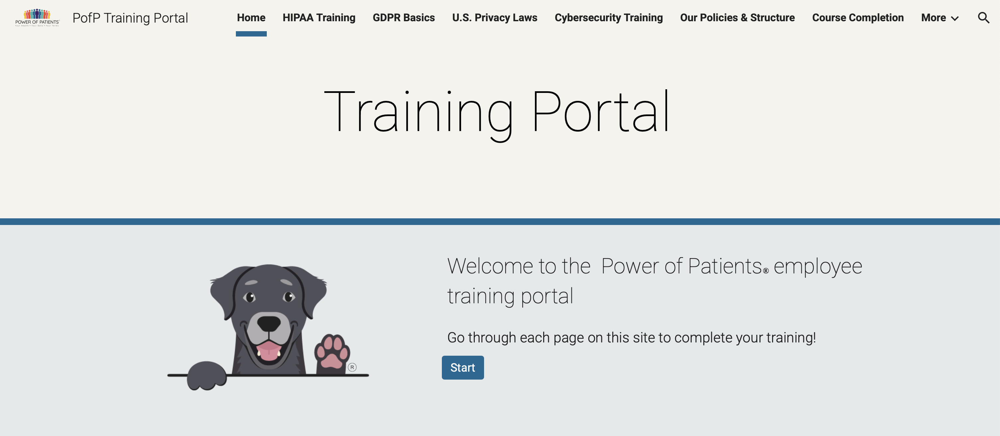

Cybersecurity:
1. Data Governance Policies
Towards the beginning of the internship, I was tasked with updating the company's Data Governance Policies. I was able to do a deep dive into privacy policies, breach policies, and data handling,
ensuring that the company's policies and processes reflected 2025 standards. I did this via researching, analyzing the current policy documents and how the company is structured, creating a checklist of changes to be made,
validating the checklist against reliable sources, and then implementing the changes. This task required careful research and analysis to ensure the security of the company's data and all user data, paying special attending to PHI.
2. Employee Training Process

One of the requirements for a company is that they must attest that all employees are trained on the data policies and on cybersecurity essentials. I was then tasked with
reworking the current process of employee training to better comply with modern expectations and standards. In order to do this I used google's many tools, combining them to create an employee portal
that educates, validates, and keeps a record for all employees. I designed a Google Site which teaches employees about data regulation, company policies, and cybersecurity. I then
created quizes in Google forms to include at the end of each module. The results of these quizzes are then stored in Google Sheets. I then connected all of the data via Google Apps Script, consolodation each
employee's quiz scores to a master spreadsheet and an personal spreadsheet for each employee. This way the employer can view all of the employee's progress, and each employee can view their own individual progress.
The end goal is that each employee can complete the training in a clear manner, and the employee can keep a record of training. Additionally, because the content of the training is in a google site, anyone in the
future will be able to edit the course content.